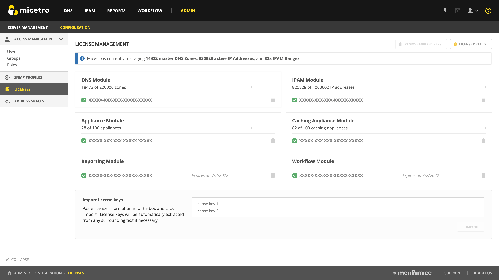

License Management
The different functionalities of Micetro can be activated by specific license keys.
There are five different keys, one each for:
DNS
IPAM
Note
The IPAM license key unlocks both the DHCP and IPAM functionality of Micetro.
Men&Mice Virtual Appliances
Workflow module
Reporting module
Viewing license keys
The Admin –> Configuration –> Licenses page shows detailed information about every key configured in Micetro, including utilization by showing the number of DNS zones and IP Addresses in use.
The License Management page displays cards for active modules with a list of associated license keys, either active or expired. The usage of the license (for example the number of DNS zones used, compared to the license limit) is shown in a usage bar in the upper right of the license card. The bottom right of the card shows the expiry date for the currently active license key.
{kind=link}
Expired keys
A notification will be shown when a license key is expired and when a license key is about to expire. This will only be shown to members in the administrators group.
Adding a License Key
Adding license keys for the first time
When logging into a system that has no active licenses, the system will prompt the user and indicate that not active license keys are in the system and offer the user to enter new license keys through the license management page. Additional keys can be added by pasting text containing valid license keys to the textbox at the bottom of the license management page.
Navigate to .
To add new key(s), scroll down to the “Import license keys” section and paste in the license key(s).
Tip
You can paste in the email you received from Men&Mice, Micetro will parse the keys from the surrounding text automatically.
{kind=link}
Click +Import.
Removing a License Key
A license key can be removed by clicking on the trashcan icon on the the right.
A confirmation dialog will display, click Yes to confirm.
Removing expired license keys
Old, expired license keys can be cleaned up and removed using the Remove expired keys action.
Export license data
Active license keys and usage data can be exported from Micetro using the Export license data action. This will compile the active keys and usage information into a single text block that can be copied.